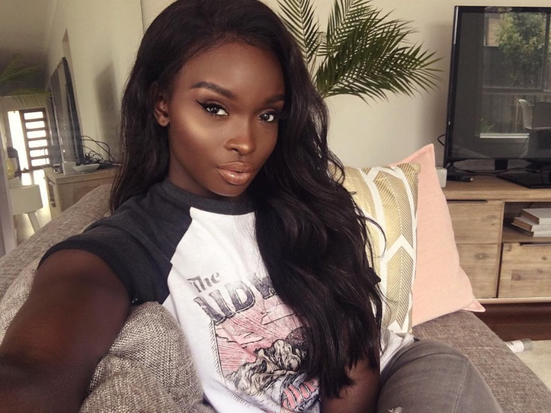
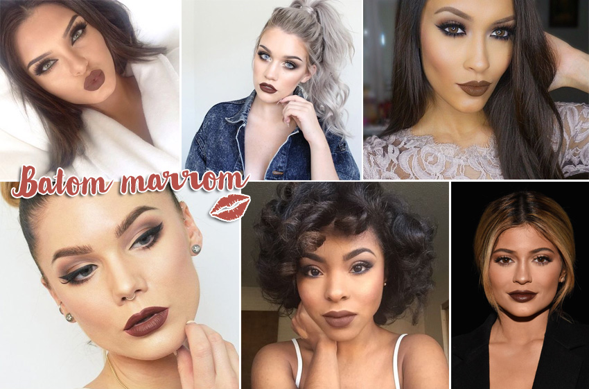
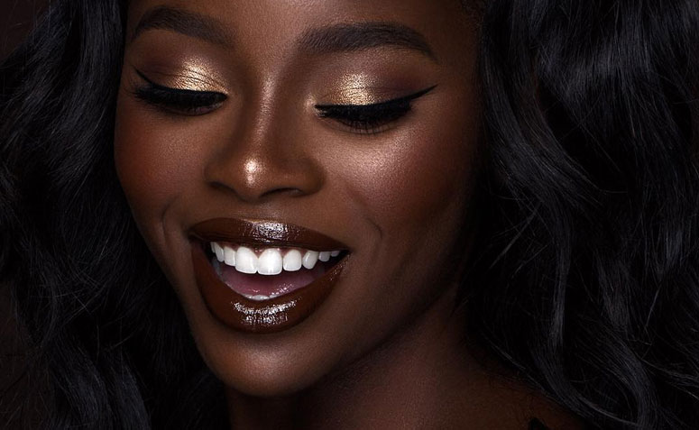
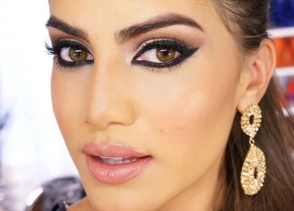
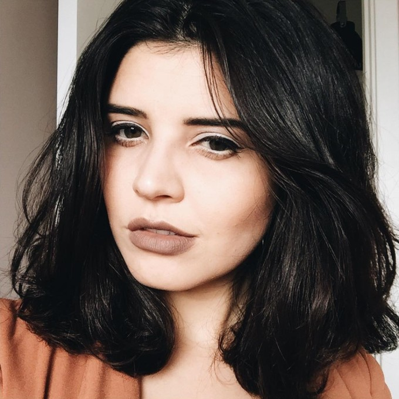

Batom marrom: descubra a tonalidade perfeita pra você!!
Aprenda como escolher o batom marrom perfeito para o seu tom de pele e saiba como criar makes lindas com essa tendência que vai reinar absoluta durante todo o ano Desde 2016 uma tendência de beleza tem se mostrado presente tanto nas passarelas, quanto nos red carpets e street style: o batom marrom! E parece que ele vai continuar firme e forte durante todo o ano de 2017 – algumas marcas, como M.A.C e Nars, inclusive, já anunciaram que vem lançamentos quentíssimos de batom marrom por aí!
Batom marrom:para qualquer tipo de pele!!
Ah, um detalhe bacana sobre o batom marrom é que ele ultrapassa estações e pode ser usado sem medo o ano todo. Em tons mais claros no verão e mais fechado no inverno, ele cai em bem em qualquer tom de pele e tudo indica que essa moda veio mesmo pra ficar.
Escolhendo o batom marrom ideal pra você
Pele Morena – O batom marrom cai super bem para as mulheres negras, realçando ainda mais a beleza desse tom de pele. – Para dar ainda mais vida à make, escolha um batom marrom mais escuro (em tons de chocolate e café) e passe uma fina camada de gloss labial sem cor por cima. – O batom marrom em efeito matte deixa o look mais sofisticado e deve ser usado principalmente à noite, aplicando uma boa dose de iluminador na área dos olhos. – O batom marrom com fundo vinho tem uma tonalidade interessante e fica ainda mais bonito em mulheres de pele escura. Pode apostar sem medo!
FAÇA VOCÊ MESMA: CARIMBO PARA DELINEADO GATINHO!
Profissional ou feito em casa, esse carimbo é a solução que faltava para quem ainda tem dificuldades em fazer o delineado gatinho sem erro Um dos grandes desafios do mundo da beauté continua sendo fazer o delineado gatinho perfeito, sem borrar, nem tremer e principalmente: deixar um lado igual ao outro! A verdade é que até mesmo os maquiadores profissionais mais experientes, vez ou outra erram a mão e acabam se atrapalhando com a técnica. Ô coisa difícil! Mas que fica linda quando bem feito, fica, né? O delineado gatinho tem o poder de realçar o olhar, além de deixar qualquer make mais simples, muito mais moderna.
Mulheres mais branquinhas precisam de atenção redobrada na hora de escolher seu batom.
Pele clara – Mulheres mais branquinhas precisam de atenção redobrada na hora de escolher seu batom. Para não chocar demais, precisa os tons mais puxados para o nude, sempre em tons rosados. – Se preferir um batom marrom mais forte, não se esqueça de carregar a maquiagem no blush. Assim você ilumina o rosto sem destacar apenas a região dos lábios. – Batons marrons com fundo cinza não são indicados para o seu tom de pele? O motivo, eu explico: por você ser mais clarinha, ele pode deixar sua make apagada e sem vida.